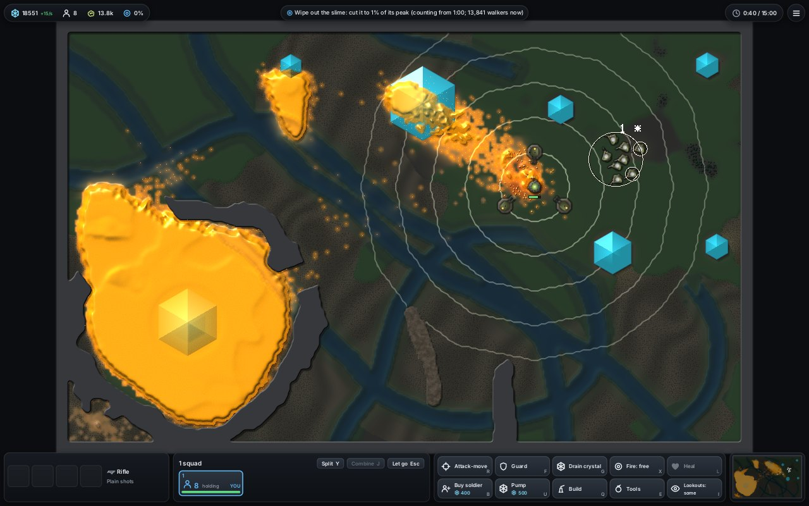
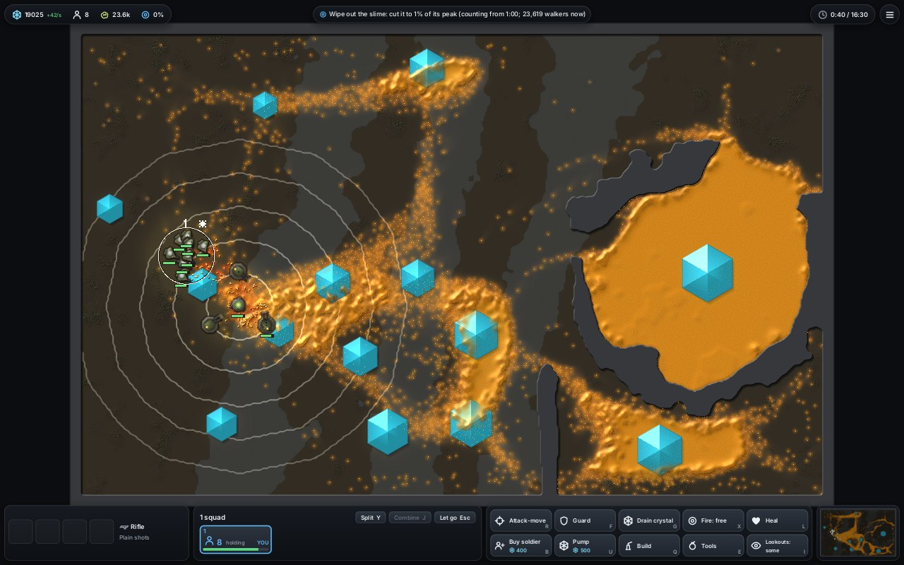
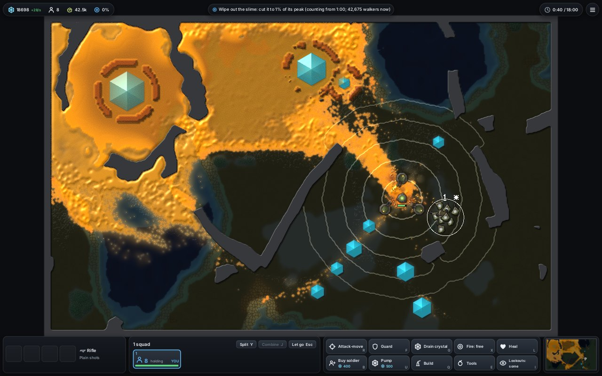

<title>Lure In Play</title>
<meta name="claude:viewport-fit-sides" content="cover">
<link rel="stylesheet" href="https://fonts.googleapis.com/css2?family=Bricolage+Grotesque:opsz,wght@12..96,600;12..96,750&family=Source+Sans+3:wght@400;600&family=JetBrains+Mono:wght@400&display=swap">
<style>
/* Layout: one reading column; each scene is a pair, before on the left and after on the right (stacked on a phone), counts under each */
:root{
  --bg:#f3f2ec; --panel:#e8e6dc; --fg:#1d211c; --muted:#5b6157;
  --accent:#b0702a; --soft:#f1e3cf; --line:#cfccbf;
  --display:"Bricolage Grotesque", "Segoe UI", system-ui, sans-serif;
  --body:"Source Sans 3", "Segoe UI", system-ui, sans-serif;
  --mono:"JetBrains Mono", ui-monospace, Consolas, monospace;
}
@media (prefers-color-scheme: dark){:root:not([data-theme="light"]){
  --bg:#16140f; --panel:#221f18; --fg:#ebe7dd; --muted:#a39d8e;
  --accent:#e0a35a; --soft:#33291b; --line:#3a3428; color-scheme:dark}}
:root[data-theme="dark"]{
  --bg:#16140f; --panel:#221f18; --fg:#ebe7dd; --muted:#a39d8e;
  --accent:#e0a35a; --soft:#33291b; --line:#3a3428; color-scheme:dark}
body{background:var(--bg);color:var(--fg);font:17px/1.55 var(--body);margin:0;
  padding-left:max(16px,env(safe-area-inset-left,0px));padding-right:max(16px,env(safe-area-inset-right,0px));padding-block:28px 64px}
main{max-width:1180px;margin:0 auto;display:flex;flex-direction:column;gap:30px}
h1,h2,h3{font-family:var(--display);text-wrap:balance;line-height:1.15;margin:0}
h1{font-size:2.3rem;font-weight:750}
h2{font-size:1.45rem;font-weight:750;border-top:2px solid var(--accent);padding-top:14px}
h3{font-size:1.08rem;font-weight:600}
p{margin:0}
section{display:flex;flex-direction:column;gap:14px}
.lede{color:var(--muted);font-size:1.02rem;max-width:760px}
.eyebrow{font:12px/1 var(--mono);letter-spacing:.08em;text-transform:uppercase;color:var(--accent)}
.prose{max-width:760px}
code{font:0.86em var(--mono);background:var(--panel);padding:1px 4px;border-radius:3px}
.grid{display:grid;grid-template-columns:repeat(2,minmax(0,1fr));gap:16px}
@media (max-width:720px){.grid{grid-template-columns:minmax(0,1fr)}}
figure{margin:0;display:flex;flex-direction:column;gap:6px;min-width:0}
figure video,figure img{width:100%;height:auto;display:block;border-radius:6px;border:1px solid var(--line);background:#000}
figure img.px{image-rendering:pixelated}
figcaption{display:flex;align-items:baseline;gap:10px;flex-wrap:wrap;font-size:.92rem;color:var(--muted)}
.side{font:750 1.1rem/1 var(--display);color:var(--fg);min-width:4.6em}
.counts{font:13px/1.4 var(--mono);color:var(--fg);font-variant-numeric:tabular-nums}
.note{background:var(--soft);border-radius:8px;padding:16px 18px;max-width:760px;display:flex;flex-direction:column;gap:8px}
ul{margin:0;padding-left:1.2em;display:flex;flex-direction:column;gap:8px;max-width:760px}
footer{font-size:.85rem;color:var(--muted);max-width:760px}
<main>
<header style="display:flex;flex-direction:column;gap:10px">
  <span class="eyebrow">Larder World · Look A · 2026-11-18</span>
  <h1>The Lure in play, with its round pull</h1>
  <p class="lede">The Enemy lane made the Lure's pull round on open ground today, so its rings are circles now, not octagons. They are lines of equal walking distance to the Lure, so they bend where the slime has to walk round rock, and they stop one ring short of where the pull ends. Each planet below: three turrets round a Lure built at 0:30, the squad holding nearby, at zoom 6 and 12, at the game's own pace.</p>
</header>

<section>
  <h2>Planet 1</h2>
  <p class="prose">The Lure at (275, 95). The counts are the slime's walkers within 30 cells of the Lure and from 30 to 60, at the clip's first and last second.</p>
  <div class="grid">
    <figure><video src="p1-z6.mp4" poster="p1-z6.jpg" autoplay muted loop playsinline aria-label="Planet 1, zoom 6: the slime streaming into the Lure inside round cream rings"></video><figcaption><span class="side">Zoom 6</span><span class="counts">36 to 42 s · within 30 cells 91 → 117 · 30 to 60 cells 225 → 250</span></figcaption></figure>
    <figure><video src="p1-z12.mp4" poster="p1-z12.jpg" autoplay muted loop playsinline aria-label="Planet 1, zoom 12: the slime streaming into the Lure inside round cream rings"></video><figcaption><span class="side">Zoom 12</span><span class="counts">40 to 46 s · within 30 cells 198 → 147 · 30 to 60 cells 226 → 230</span></figcaption></figure>
  </div>
</section>

<section>
  <h2>Planet 2</h2>
  <p class="prose">The Lure at (100, 168). The counts are the slime's walkers within 30 cells of the Lure and from 30 to 60, at the clip's first and last second.</p>
  <div class="grid">
    <figure><video src="p2-z6.mp4" poster="p2-z6.jpg" autoplay muted loop playsinline aria-label="Planet 2, zoom 6: the slime streaming into the Lure inside round cream rings"></video><figcaption><span class="side">Zoom 6</span><span class="counts">36 to 42 s · within 30 cells 365 → 557 · 30 to 60 cells 678 → 1049</span></figcaption></figure>
    <figure><video src="p2-z12.mp4" poster="p2-z12.jpg" autoplay muted loop playsinline aria-label="Planet 2, zoom 12: the slime streaming into the Lure inside round cream rings"></video><figcaption><span class="side">Zoom 12</span><span class="counts">40 to 46 s · within 30 cells 537 → 628 · 30 to 60 cells 940 → 1016</span></figcaption></figure>
  </div>
</section>

<section>
  <h2>Planet 3</h2>
  <p class="prose">The Lure at (357, 182), across the slime's broad band. The counts are the slime's walkers within 30 cells of the Lure and from 30 to 60, at the clip's first and last second.</p>
  <div class="grid">
    <figure><video src="p3-z6.mp4" poster="p3-z6.jpg" autoplay muted loop playsinline aria-label="Planet 3, zoom 6: the slime streaming into the Lure inside round cream rings"></video><figcaption><span class="side">Zoom 6</span><span class="counts">36 to 42 s · within 30 cells 513 → 295 · 30 to 60 cells 464 → 426</span></figcaption></figure>
    <figure><video src="p3-z12.mp4" poster="p3-z12.jpg" autoplay muted loop playsinline aria-label="Planet 3, zoom 12: the slime streaming into the Lure inside round cream rings"></video><figcaption><span class="side">Zoom 12</span><span class="counts">40 to 46 s · within 30 cells 404 → 314 · 30 to 60 cells 386 → 471</span></figcaption></figure>
  </div>
</section>

<section>
  <h2>Each planet whole at 0:40</h2>
  <div class="grid">
    <figure><figcaption><span class="side">Planet 1</span></figcaption></figure>
    <figure><figcaption><span class="side">Planet 2</span></figcaption></figure>
    <figure><figcaption><span class="side">Planet 3</span></figcaption></figure>
  </div>
</section>

<section>
  <h2>What to look for</h2>
  <ul>
    <li><strong>Round rings on open ground,</strong> bending where the walk to the Lure is longer, as on planet 2 round the rock.</li>
    <li><strong>The slime streams in along them</strong> from as far as the pull reaches, and the turrets thin it as it comes.</li>
    <li><strong>No dotted ring at the edge</strong> of the pull, zoomed out.</li>
  </ul>
  <div class="note">
    <h3>Noted, nothing changed</h3>
    <p>Close up the rings are faint over the bright body of the slime and plain on bare ground; they are a quiet sign on purpose. The Lure's old green scent glow is never lit in these films, because the rings are drawn the whole time a Lure stands.</p>
  </div>
</section>

<footer>Filmed on the software renderer, run seed 1, with the Enemy lane's round pull (#478). The clips are the middle of the 1280 x 800 picture at its own pixels. Source and counts: <code>Reports/lure-in-play-2026-11-18/</code> in the repo.</footer>
</main>
